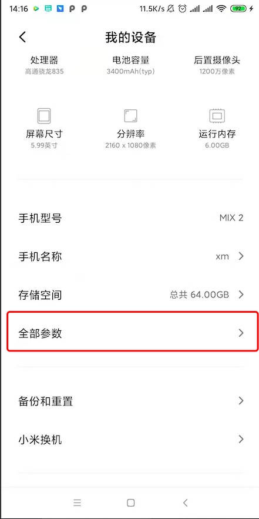
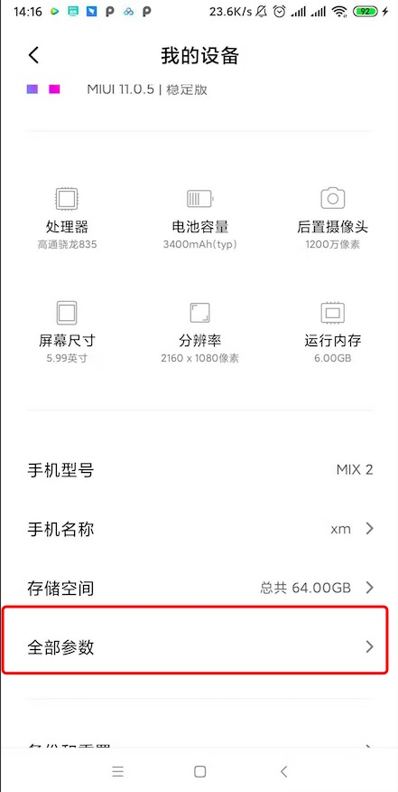
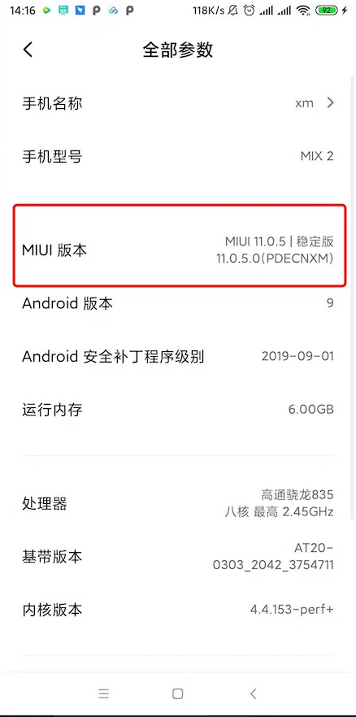
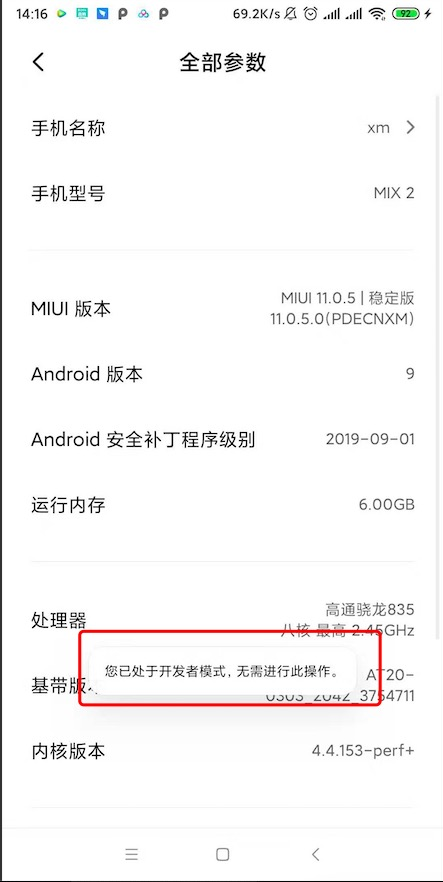

1.vconsole（NetWork目前官方不支持，记得以前是支持的，只能手动打印请求和结果）
import VConsole from "vconsole";
const vconsole = new VConsole();
console.log('vconsle启动...',vconsole)
2.利用 chrome://inspect/#devices
1.利用USB将电脑和手机连接起来
2.手机调试为开发者模式
ex:(小米手机为例,别的型号手机者自行百度)
（1）手机设置-更多参数信息-MUUI版本系统连续点击四次会打开手机开发模式（点击时手机会有相应的微提示）




然后就可以愉快的使用廖~~~